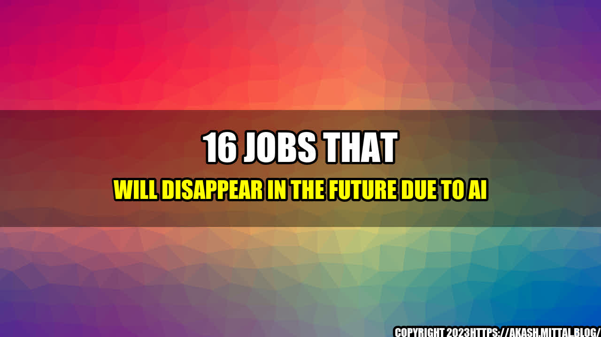

16 Jobs That Will Disappear in the Future Due to AI

Are you ready for a world where robots take over your job? According to a recent report by the World Economic Forum, up to 75 million jobs could be lost due to automation by 2025. While AI technology is advancing rapidly, there are still many jobs that require human skills and expertise. However, there are some jobs that are at high risk of being automated in the near future.
The Story of John the Truck Driver
John has been a truck driver for over 20 years. He loves the freedom of the open road, the sights and sounds of the countryside, and the satisfaction of delivering goods to people all over the country. But one day, John's boss tells him that he's no longer needed. The company has invested in self-driving trucks that can deliver goods faster, cheaper, and more safely than human drivers. John is devastated. He doesn't know what to do with his life.
John's story is not uncommon. Many workers across various industries are facing the same dilemma. With AI technology becoming more advanced, many jobs that were once considered safe from automation are now at risk of disappearing altogether. In this article, we'll take a look at 16 jobs that are most likely to be automated in the near future.
16 Jobs That Will Disappear Due to AI
- Truck Drivers - self-driving trucks can deliver goods faster, cheaper, and more safely than human drivers.
- Cashiers - automated checkout machines are becoming more popular in grocery stores, retail shops, and fast food restaurants.
- Travel Agents - AI-powered chatbots can help customers book flights, hotels, and rental cars without human help.
- Telemarketers - automated voice systems and chatbots can make sales calls and answer customer inquiries without the need for human intervention.
- Toll Booth Operators - electronic toll collection systems, such as EZ-Pass, can automatically charge drivers for using toll roads.
- Bank Tellers - online banking and mobile apps are making it easier for customers to conduct transactions without going to a physical bank branch.
- Fast Food Workers - automated cooking machines and self-serving kiosks are becoming more common in fast food restaurants.
- Data Entry Clerks - AI-powered systems can scan and digitize paper documents without human input.
- Receptionists - AI-powered chatbots and virtual assistants can answer phone calls and schedule appointments.
- Assembly Line Workers - robots can assemble and package products faster and more accurately than human workers.
- Librarians - online databases and search engines are making it easier for people to find information without going to a physical library.
- Insurance Underwriters - AI-powered systems can analyze data and assess risk without human intervention.
- Delivery Drivers - drones and self-driving vehicles can deliver packages faster and more efficiently than human drivers.
- Legal Secretaries - AI-powered systems can draft legal documents and research cases without human input.
- Accountants - AI-powered systems can perform accounting tasks, such as bookkeeping and auditing, faster and more accurately than human accountants.
- Customer Service Representatives - AI-powered chatbots and voice systems can answer customer inquiries and resolve issues without human intervention.
Here are some examples of how AI technology is already being used to automate certain jobs:
- McDonald's has installed self-serving kiosks in over 20,000 of its restaurants worldwide, reducing the need for cashiers.
- Waymo, a subsidiary of Google, has developed self-driving trucks that have already been tested in Arizona and California.
- GE Healthcare has developed an AI-powered system that can analyze medical images and help doctors diagnose diseases.
- The insurance company Lemonade uses AI technology to process claims without human intervention, allowing them to process claims faster and more accurately.
Conclusion
Here are three key takeaways from this article:
- AI technology is advancing rapidly, and many jobs are at risk of being automated in the near future.
- While some jobs may disappear due to automation, new jobs will be created in fields such as AI programming and robotics.
- Workers who want to stay relevant in the workforce need to develop skills that cannot be easily automated, such as creativity, critical thinking, and emotional intelligence.
and Case Studies
After losing his job as a truck driver, John decided to go back to school to learn computer programming. He realized that he had a passion for technology and wanted to be a part of the AI revolution. With his new skills, he was able to land a job as an AI programmer at a startup company. He feels fulfilled knowing that he's contributing to the development of technology that will change the world.
Another example is Sarah, a travel agent who was worried about losing her job to chatbots. Instead of giving up, she decided to embrace the technology and learn how to use it to her advantage. She became an expert in chatbot design and development and started her own chatbot consulting business. She now helps travel agencies and other businesses implement chatbots to improve their customer service and sales.
References and Hashtags
Hashtags:
- #AIjobs
- #Automation
- #FutureOfWork
- #SkillsForSuccess
Category:
Technology
Curated by Team Akash.Mittal.Blog
Share on Twitter Share on LinkedIn